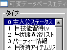
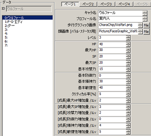
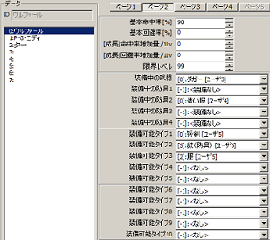
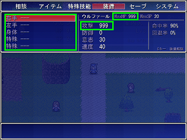

可変データベース
右のようなウィンドウが表示されます。

【目標】
サンプルゲーム内の主人公、ウルファール（青い人）の初期攻撃力・ＨＰを999に、装備を無しにします。
| 【1】 可変データベース 右のようなウィンドウが表示されます。 |
|
| 【2】 「タイプ」が「主人公ステータス」に なっていることを確認してください。 （もしなっていなければ、 「0:主人公ステータス」をクリック） |
 |
| 【3】 そのまま右の方を見ると、右のような一覧が 表示されています。 すでにウルファールが選択されていますね。 ここで、左の欄から「ＨＰ」と「最大ＨＰ」の項目を、 両方999にしてください。（40と30になっています） 同じように、「基本攻撃力」も999にしてください。 （15になっています） |  |
| 【4】 次に、上の方にある「ページ１」「ページ２」…… と書いてあるボタンから、ページ２に変更してください。 すると、右の画像のような一覧に変わります。 ここで、「[-1]:＜装備無し＞」になっていない項目である 「装備中の武器」と「装備中の防具２」をクリックして、 表示されたメニューから 「[-1]:＜装備無し＞」へ変更してください。 |  |
| 【5】 テストプレイ 攻撃力・ＨＰが999になり、装備が無くなりました。 |  |
＜執筆者：Barong＞